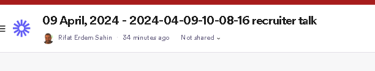
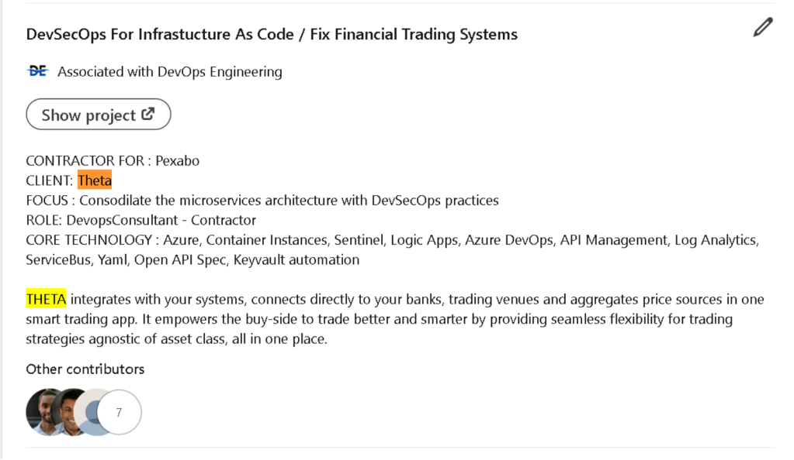
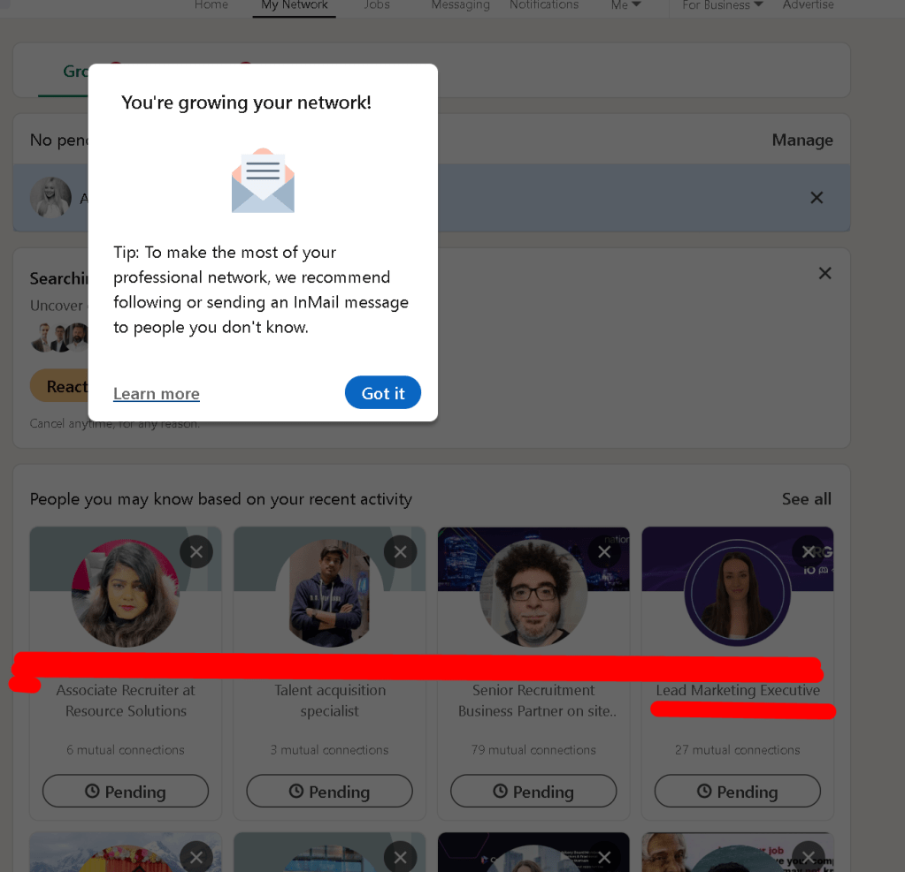
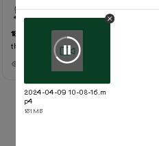
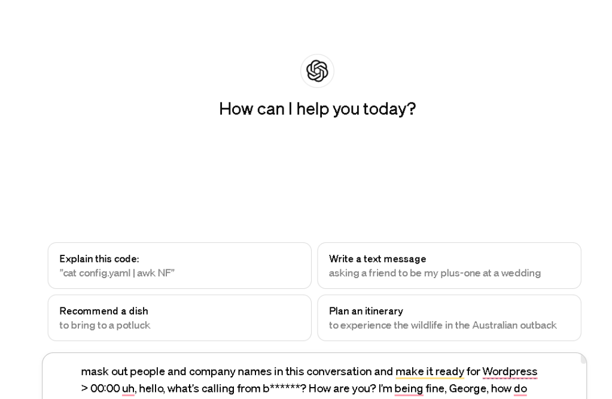
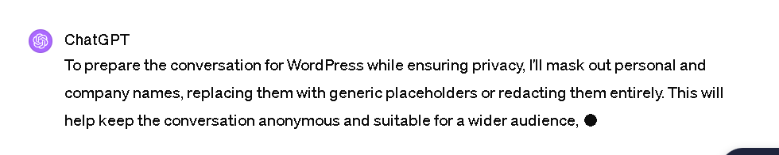
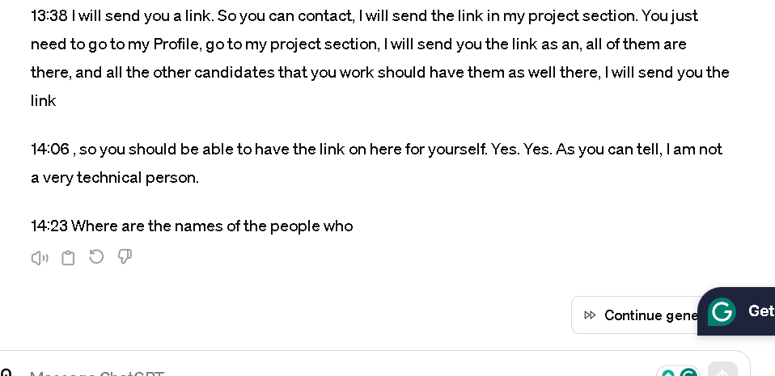

Young Recruiters And Senior IT Contractors Conversations
They are trying to get the contact details which are already in Linkedin


It is a 20 minute talk > You got to talk there is always new comers to the recruiting industry > and building a network takes time

Shared the details of all the screenshots >
https://www.linkedin.com/messaging/thread/2-YmM0YzNhODItZmFmOS00NDM2LTgzOTYtNjE5YWQxZDRiMGNmXzAxMg==
Here is the sentive parts marked from the call in a transcript format!
Extracted with Loom

Processed with GPT 4


GPT with multi continue attempts

Here is the transcript
To prepare the conversation for WordPress while ensuring privacy, I'll mask out personal and company names, replacing them with generic placeholders or redacting them entirely. This will help keep the conversation anonymous and suitable for a wider audience, focusing on the context and the flow rather than specific entities.
00:00 Uh, hello, what's calling from [Company Name]? How are you? I'm being fine, [Name], how do you do? I'm great, I'm great, thank you, so I'm a cyber security expert in the field of recruitment and I specialize in placing contracts across Europe and I just wondered, you know, what your availability is like at the moment.
00:19 As I have a really good role that I think you're a great fit. Yes, right now I'm looking for my new contract and I'm very proficient in the security space, so I would definitely like to hear what you have to offer.
00:37 Okay, perfect, so before we get into that then I just wanted to know, what is your availability when could you start?
00:43 I can start as soon as possible. Okay, immediately, okay, that's good. And then in terms of your location, where are you located?
00:53 I'm living in Cambridge. Cambridge. Yes. Okay, I mean, did you have an issue coming to London twice a week? I'm going to London tomorrow, so I have done five different contracts in London, so I'm okay working in London during the day.
01:20 Okay, and then let me just see if I've got a CV here for you, [Name]. I've got a very outdated CV.
01:30 You think if I send you an email now, you can send me a CV just so we can have a conversation about your experience and then I can go with you to see if I can.
01:40 Yes, I can definitely do that. Do you have my email address [Email Address]? I've just sent you an email now. Just check you received it.
01:50 All right. It is loading right now. So, I'm still waiting for the email, maybe it's in the spam. I'm using that one also [Email Address], do you have LinkedIn by the way?
02:26 All right, let's do that. I'm waiting for the connection request, when it arrives, I will reply you back instantly and alright, I'm looking forward to it.
03:25 You know, where is it coming from? Your heart, what's the long version of your name? Sorry, can you repeat that?
03:36 Your name, it didn't arrive though. I'm looking for [Name] in my network. Yes, I saw you [Name], and I will be able to send you the messages on here.
03:53 And as well as a meeting link if we need to talk in the future. I will also send you the email.
04:01 And I will send you the CVs as well. Yes, I will send you the detailed CV and I will send it to you in the word format as well.
04:14 So you will be able to have both of the CVs and I will send you a page where you can generate all my skills with ease.
04:24 So it will give you, if you just copy-paste the JavaScript, get the skills, it will show you all the skills with experiences that I have, and if you send the email to [Email Address] I will automatically read it and send you my up-to-date CV by automation with the related skills that are already
04:45 mapped to the JavaScript. Okay, very, very well, very well, very well, very well. Okay, let's have a look then. So I'm just looking over your CV now I see, and you've done your job, so I see your projects. I want to start at your project in 2019.
05:11 All right. Yes, I was working as a contractor for [Company Name] for [Company Name]. They were building virtual reality headsets to work on the aircraft carriers.
05:40 So I was the DevOps engineer who is responsible to release to the Oculus Pipelines in Facebook for [Company Name] so they can do their training.
05:54 My last role with [Company Name] is a DevSecOps work. I worked as a release training engineer to automation for Azure Sentinel for the [Company Name] security team so that was one of the main use cases that I built for the company.
06:38 Yes, with [Company Name], that was related if you look at my CV that was related to AWS AWS Step Functions and for a defense contractor in the United States that was a contractor released my date they responsibility us create the pipeline for the Oculus Quest platform built AWS Step Functions for them to build
07:08 their Oculus Quest binaries so they can release them into the production for
Facebook. That was my day-to-day responsibility there, though.
07:24 So you're paid up for me, create a pipeline to AWS? Yes, use AWS step functions to create a pipeline for it and release them to the Oculus Quest store.
07:41 And you can also read them in my long version of the CV, they're on the project section and you can also read them in my LinkedIn which I will send you a screenshot as well.
07:56 Okay, no, your longer than your CV. You send me that as well, right? Yes, I just send you that one as well.
08:05 And I will also send you a screenshot as well. Because in a job spec, there is a lot of skills.
08:11 I also send you a skills mapping tool where you can copy-paste the job spec and hit get the skills.
08:18 It will list you all the related skills that are looking for. With the experiences I had in the past. in [Company Name], the team size is around 20 people in the DevOps team that I was working with.
09:02 Yes, it's quite a big team. I work globally though, this is an American company. If you look at my CV, I work globally, not only in the United Kingdom, [Company Name], is an American company, a global company.
09:23 I was reporting to a guy called [Name]. [Name]. I will send you his LinkedIn if you want to talk to him.
09:35 I will send you his LinkedIn so you can talk to him if you want. He is the CTO of the Company, part of the CTO of the Company, and then you [Name], sorry, [Name], his name is a bit longer.
10:01 I will send it to your own LinkedIn so you can check it out on LinkedIn. All of these references, if you check my LinkedIn, you will be able to find it in my project section as well with all the contact details as well.
10:15 So you don't really have to ask each one of them. I have listed them in the project section that you can find.
10:23 I will send you one of them on my LinkedIn. On my LinkedIn, they are already there though. So if you need to find out anybody, there is a project section down there that you can find them directly over there.
10:37 I did send you one of the examples. There are 67 projects and there are more than 400 people that you will be able to find their contacts.
10:47 Okay, I mean, I'm just going to ask you, like, go through just so I can make sure I have got your entire detail brilliant.
10:55 So, look, then you will work in the Yes, I worked with the [Government Name] government to build the World Cup.
11:09 Okay, I'm moving on, sorry, what was the purpose of the project? The purpose was of the project was building architecture for the World Cup.
11:27 I'm building software architecture for the World Cup. I'm building software architecture and how do you do that? Using Azure and I worked in Microsoft as a cloud solution, So I had the necessary experience in order to be able to do that.
11:55 I created the World Cup architecture, the cloud architecture for the World Cup building system. Software architecture for them to be able to release their software to Microsoft as they were using an on-prem solution.
12:14 They needed to do a lift and shift to a Microsoft cloud and run it in Microsoft cloud. I helped them to do that And they are all written in my long version of the CV as well as in LinkedIn as well I did send you the screenshots did you see the screenshots that I shared with you on LinkedIn Yes
12:45 , you can find the people and you can find the detailed job specs in LinkedIn, as well as in the long version of the CV They were able to have a consistent and a partitioned architecture for the World Cup and they did it seamlessly they didn't have any issues, building the customers in the world
13:15 cup. Yes. And then moving on. So I'm sorry, who is the [Organization Name] in the world cup? It is in my, you can look at it in the project section.
13:38 I will send you a link. So you can contact, I will send the link in my project section. You just need to go to my Profile, go to my project section, I will send you the link as an, all of them are there, and all the other candidates that you work should have them as well there, I will send you the link
14:06 , so you should be able to have the link on here for yourself. Yes. Yes. As you can tell, I am not a very technical person.
14:23 Where are the names of the people who
you were in for the others? They are in the section. I will send them to you one more time.
14:33 They will be other contributors. I'm sending them to you right now, such as the [Name] [Name]'s name is here, and I'm also sending you the other contributors.
14:45 There are multiple people that you will be able to find directly from there, so it will help your chat. For me, I'm just more interested in the people who are making you because they're the people there.
14:56 Yes. You know, you're a relative. Yes, I did put them there though, so you should be able to find them directly from Okay, then I want to move to your role that is trading.
15:13 Yes. Your depth circles, engineering, and that's very relating to obviously this. You know, this role that I've got here, you know, what will the age of the name is from the ability here?
15:23 I created Azure Logic Apps to be able to deploy infrastructure as code for the company. I created a system for them to be able to release their infrastructure to Microsoft Azure in a coded manner, though.
15:58 It's called Infra. I created a system for them to be able to release their infrastructure to Azure cloud. They have a repeatable environment for their customers, so every time they go to the customer, they can spin up a tenant in the infrastructure environment for themselves.
16:45 They can create a new environment for their customers. It is up to luck that I will send you the screenshots so you can get there links there are seven different people that you need to contact.
17:22 So I descended through your own LinkedIn. So I just want the person, you know, you're reporting to, I don't need all of your colleagues.
17:32 I just need to, you know, that's fine. That's brilliant. All right. [Name] [Name]. I did send you the link. [Name] [Name] that you can find.
17:40 There are all these people that you can find directly from there. [Name], thank you very much for your time. Do you have any other questions that you want to ask?
17:52 I'm just going to go to a meeting at 10.30. I need to be in a meeting. Yes. I live in Cambridge, England Cambridge.
18:14 I work from a 400 pound to a thousand pound today. It depends on the customer, though. My last London rate was 700 pounds per day.
18:33 If I'm going two days a week, if it is outside of IR35, 700, 800 makes sense though. If it is outside, it might be slightly higher.
18:43 But I might also accept the rates which are lower as well. It of ways depends on the customer how long they want to come up with.
18:57 Yes, the sound's fantastic. At this time, the market is very dry. I will go also for 500 pounds rate. I'm going to send you a letter of representation now, which we need to do is, you know, some, but just saying that you agree for me to represent you for this role.
19:26 Yes, I will definitely do that. Please send an email. I will send you an email back. I'm mentioning, I'm happy to be represented.
19:35 Okay, but I said, then would you be able to send that back to me in the next hour or so?
19:38 Yes, if I can receive your email, it's [Email Address]. I will just reply back, and you can find that email on my LinkedIn.
19:54 But use the other email. I also use another email called [Email Address]. Please use that email, is it? Yes. I will send you a direct email, [Name].
20:06 I'm happy to be represented email directly, so you can do that, is it? But I can't find your contact details on LinkedIn.
20:13 I found it on LinkedIn. I will send them direct [Email Address]. Now you can send it directly.
20:26 You can find my email in the contact section and I also send my email address to you in the messaging.
20:36 Yes, you can use that email because the other email I could not get yours, because I guess it's in the spam or it got blocked for some reason, you can use the email as an I work for [Company Name], I create courses globally and I'm a global contractor, I don't only work in the UK, I work all over the
21:14 globe. There is nothing solid at the moment. No, I don't have, I'm not talking to anyone at the moment. All right, thank you very much for your time.
21:49 All right, thank you,
If you are interested in becoming an IT Contractor
https://www.udemy.com/course/become-an-ultimate-it-contractor
Imported from rifaterdemsahin.com · 2024